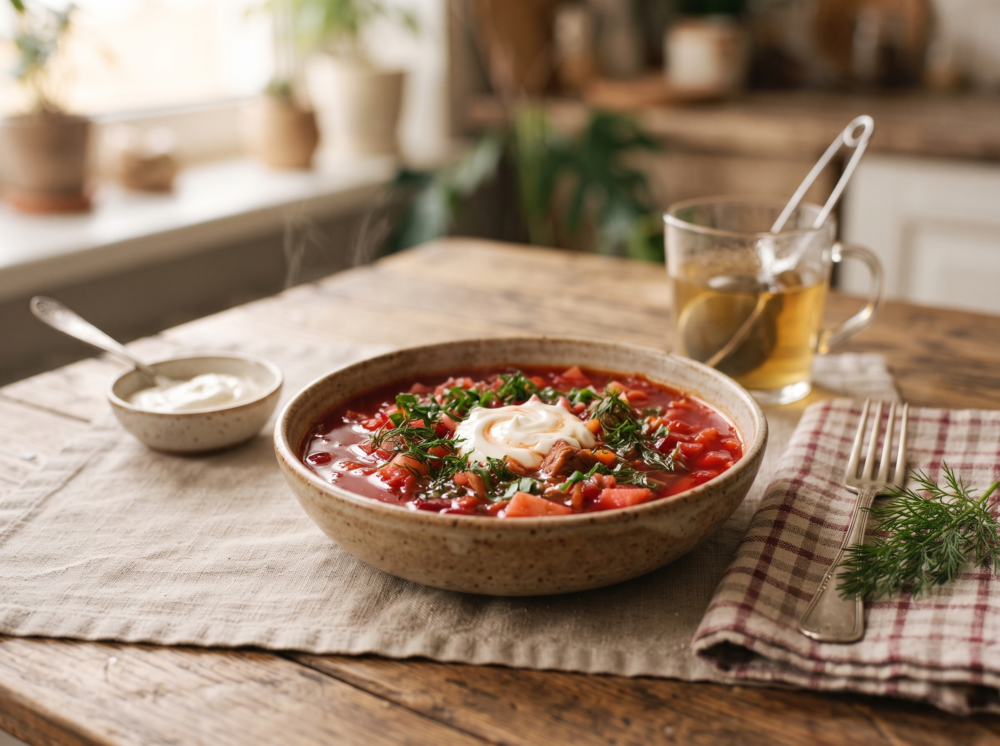

Борщ класичний
Насичений борщ на яловичому бульйоні з буряком, капустою та картоплею. Подавайте гарячим зі сметаною та свіжою зеленню.
- Категорія
- Обід
- Час
- 2 години
- Складність
- Середньо
- Порцій
- 6
- Оцінка
- ★ 4,8 з 5

Інгредієнти
Для бульйону
- Яловичина на кістці — 600 г
- Вода — 3 л
- Лавровий лист — 2 шт.
- Сіль — за смаком
Для борщу
- Буряк — 2 середні (близько 300 г)
- Картопля — 4 середні
- Капуста білокачанна — 300 г
- Морква — 1 шт.
- Цибуля — 1 шт.
- Томатна паста — 2 ст. л.
- Часник — 3 зубчики
- Олія — 3 ст. л.
- Лимонний сік або оцет — 1 ст. л.
Для подачі
- Сметана
- Зелень кропу та петрушки
Приготування
- Залийте м'ясо холодною водою, доведіть до кипіння та зніміть піну. Варіть на слабкому вогні близько 1,5 години, наприкінці додайте лавровий лист і сіль.
- Дістаньте м'ясо з бульйону, відділіть від кістки та наріжте невеликими шматочками.
- Буряк наріжте соломкою або натріть на крупній тертці. Потушкуйте на сковороді з 1 ст. л. олії, томатною пастою та лимонним соком 10–15 хвилин, щоб зберегти колір.
- Моркву натріть, цибулю наріжте кубиками й обсмажте на решті олії до м'якості.
- У киплячий бульйон покладіть картоплю, нарізану кубиками. Через 10 хвилин додайте тонко нашинковану капусту та варіть ще 5–7 хвилин.
- Додайте тушкований буряк, засмажку та м'ясо. Варіть 5–10 хвилин, перевірте сіль.
- Вимкніть вогонь, додайте подрібнений часник і зелень. Накрийте кришкою та дайте борщу настоятися 15 хвилин.
Сподобався рецепт?
Щоб додати борщ в «Улюблене», потрібно мати акаунт.